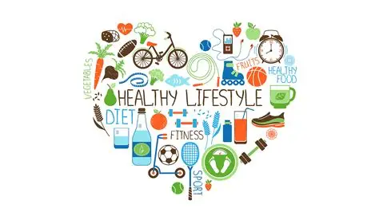
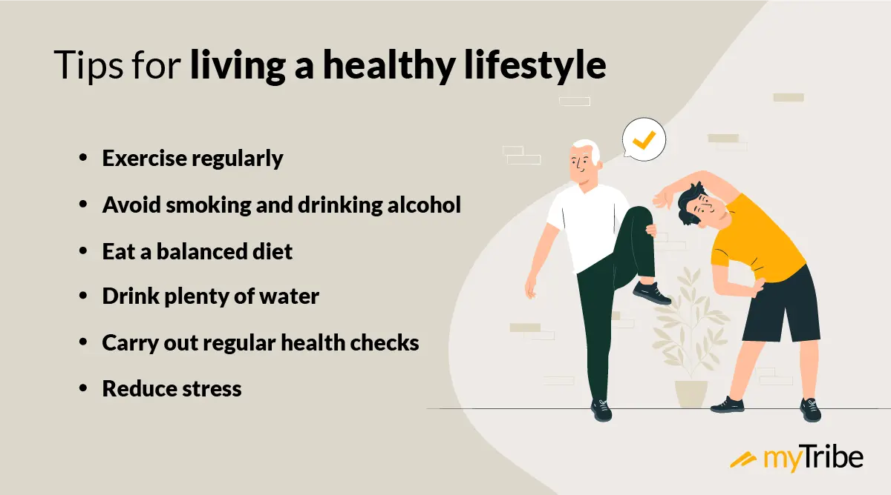

Tips on a healthier life
There are many ways that you can look after and improve your health by making some changes in your lifestyle.
The most important ways have already been mentioned in this article already but these are some more changes that
everyone should try and implement for a healthier life;eat a nutrient-dense diet, exercise regularly, maintain
healthy weight, manage stress effectively, stay hydrated, avoid tobacco products, limit alcohol intake, build strong
social connections and get good sleep. Many people assume these changes means completely stop doing a particular thing
altogether however it can be small and progressive change as well such as limiting or increasing what you do compared to before.
This can be as little as taking a 30 minute walk everyday. It does not have to be a huge change instantly but needs to be
a point to start from. Anything consumed which is harmful to your health will need try and be stopped before it is too late.
Like it has already been mentioned, it can be progressive. For exmaple, trying to quit smoking. Anyone addicted to it, should
try and reduce the amount of cigarettes used in a week. This should then be applied to how many are used in a day. By setting
yourself boundaries and having a bit of self respect and discipline, your health can drastically improve.
All of these will have a greater impact on your health in many ways particularly physically and mentally .[11]
